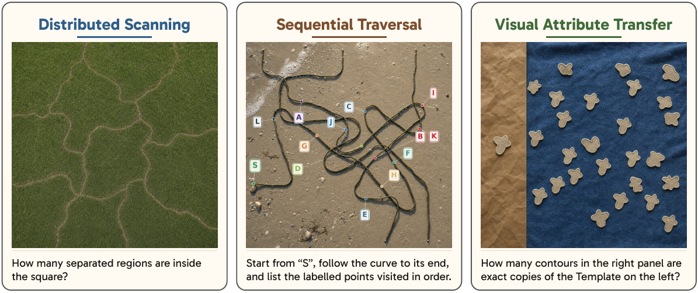
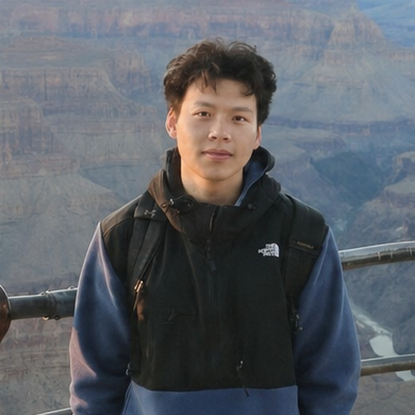
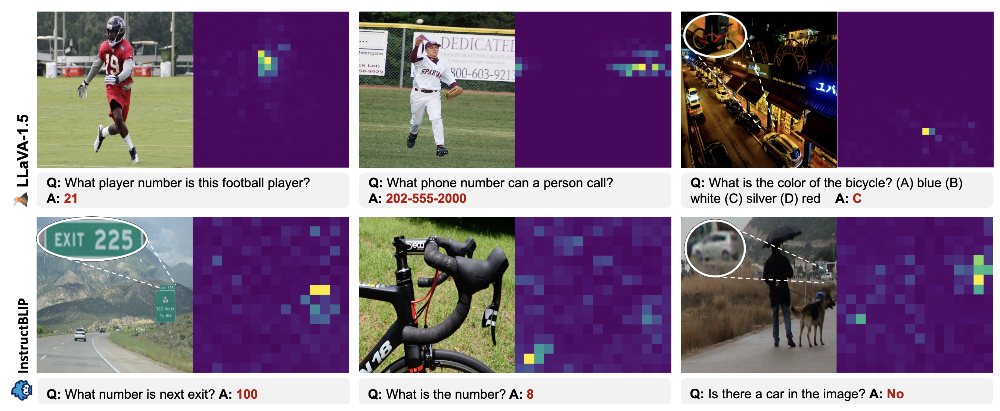
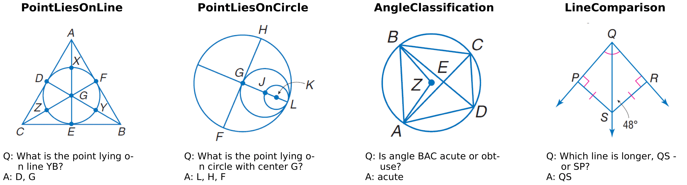
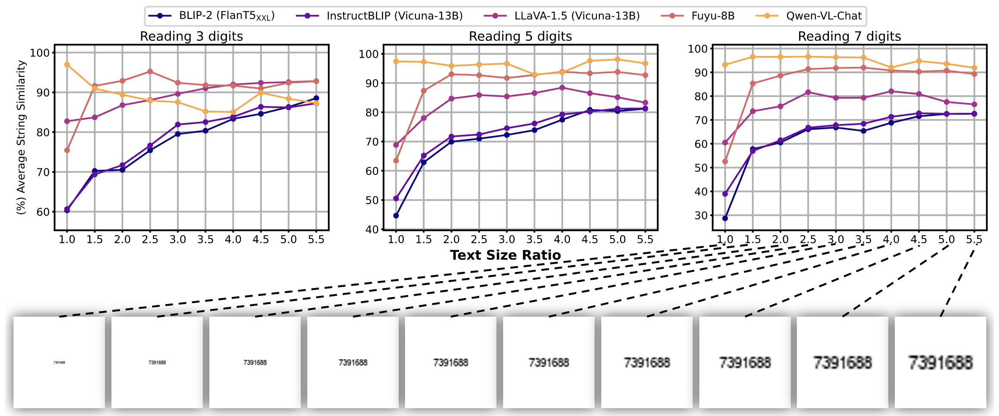
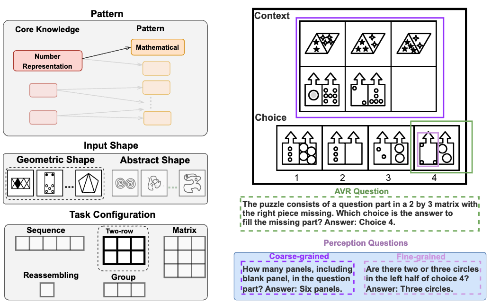

An Exam for Active Observers
We introduce ActiveVision, a benchmark of 17 tasks that require repeated visual observation, revealing a substantial gap between frontier multimodal models and human performance.
Ph.D. Student in Computer Science · University of Southern California
I am a Computer Science Ph.D. student at USC, advised by Willie Neiswanger. My research focuses on multimodal learning and reasoning. Previously, I received my bachelor's degree in electrical engineering from Tsinghua University.
I’m looking for industry jobs starting in Spring/Summer 2027. Please reach out to me by email!

Multimodal learning and reasoning.

We introduce ActiveVision, a benchmark of 17 tasks that require repeated visual observation, revealing a substantial gap between frontier multimodal models and human performance.

We show that MLLMs often know where to look but fail to perceive small details, and that attention-guided cropping improves performance without training.

Euclid studies geometric low-level visual perception in multimodal LLMs and introduces Geoperception, design-space analyses, and a model family with stronger LLVP abilities.

We reveal that object quality, size, distractors, and location independently affect MLLMs' ability to perceive small visual objects.

A comprehensive benchmark, MARVEL, that evaluates multimodal large language models' abstract reasoning abilities and reveals significant performance gaps between humans and state-of-the-art MLLMs.